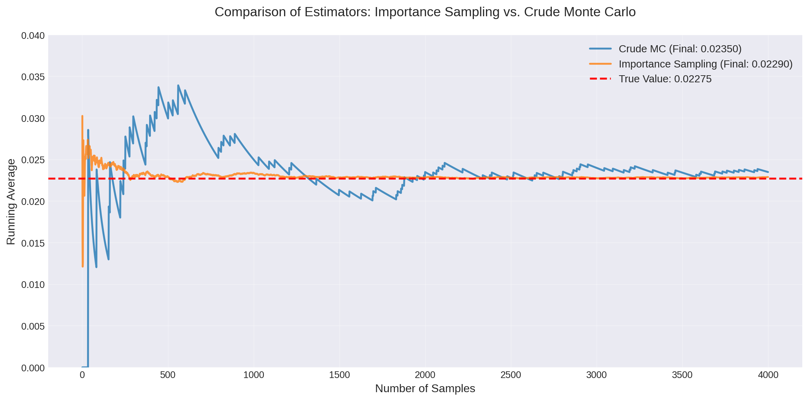
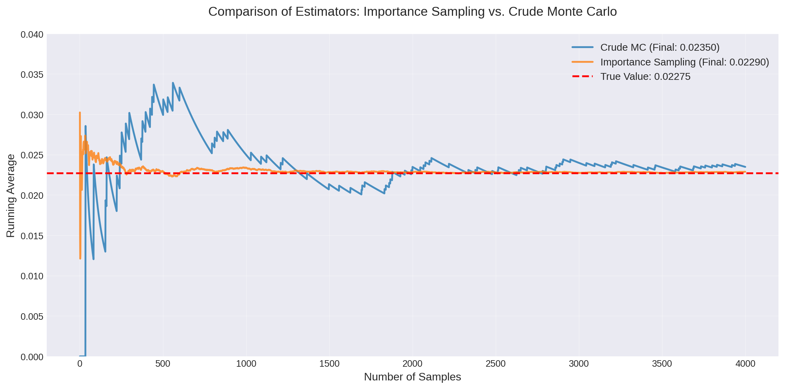
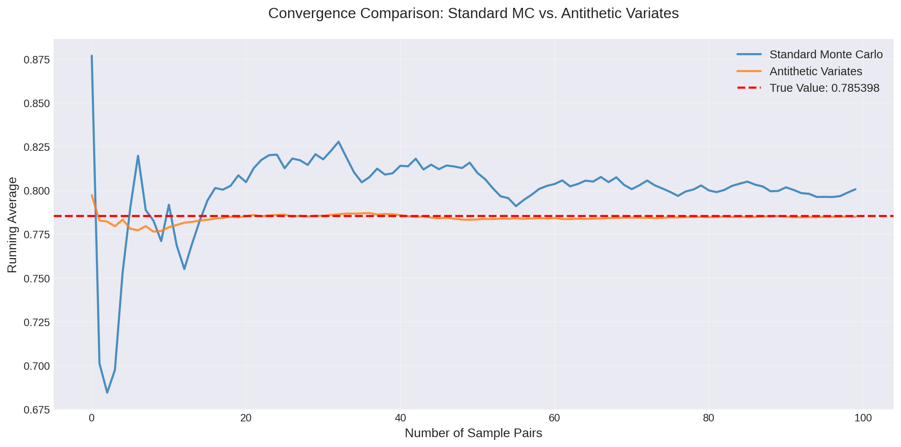
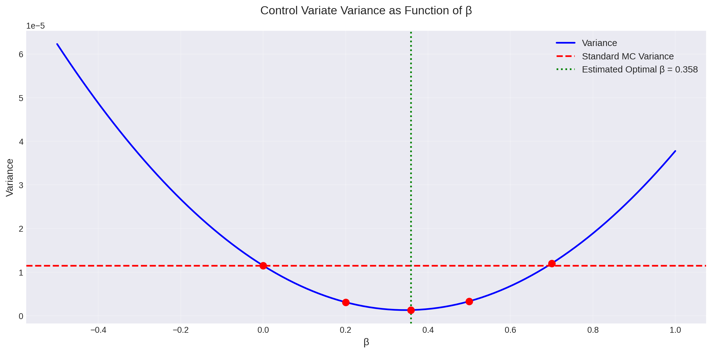
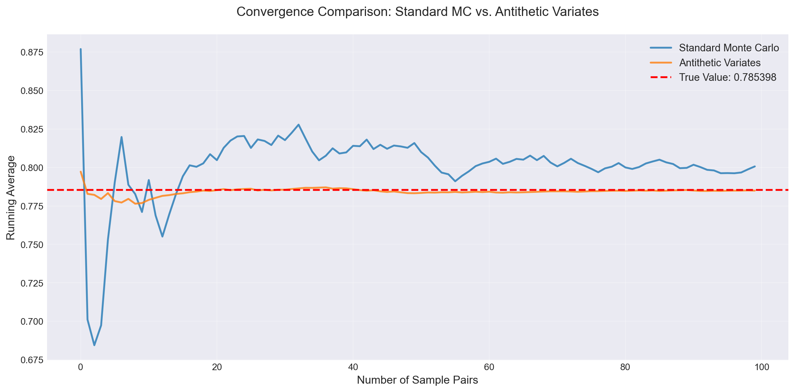
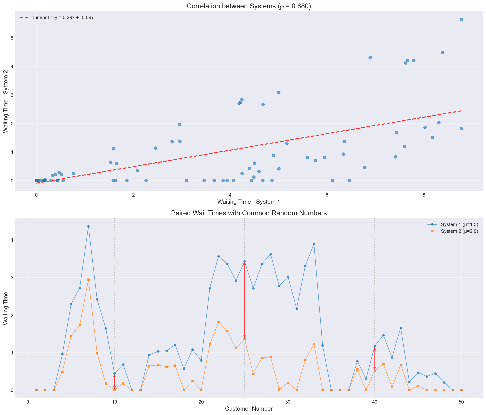

Importance Sampling:
Estimate: 0.02290
Variance: 7.94e-08
Relative Error: 0.012
Crude Monte Carlo:
Estimate: 0.02350
Variance: 5.74e-06
Relative Error: 0.102
Variance Reduction Factor: 72.2xApril 1, 2025
We have seen various techniques to sample from a target distribution. One of the main uses of sampling is to estimate some quantity \(\mathbb{E}[f(X)]\). Many applications rely on the sample mean estimator:
\[ \hat{\ell} = \frac{1}{N}\sum_{i=1}^{N}f(X_i). \]
Many sampling techniques do not guarantee independence of samples. As such, the variance is given by:
\[ \text{Var}(\hat{\ell}) = \frac{1}{N^2} \sum_{i=1}^{N} \text{Var}(f(X_i)) + \frac{2}{N^2} \sum_{i=1}^{N} \sum_{j=1, j \neq i}^{N} \text{Cov}(f(X_i), f(X_j)). \]
One way to reduce the variance is to “thin the samples” by choosing samples. In this chapter, we’ll look at other techniques that allow us to change how we sample to reduce estimator variance.
Estimation of Rare-Event Probabilities. Let’s start with an example. Consider estimation of the tail probability \(\ell = P(X > \gamma)\) of some random variable \(X\) for a large number \(\gamma\). We can use the following estimator:
\[ \hat{\ell} = \frac{1}{N} \sum_{i=1}^{N} \mathbb{I}_{> \gamma}(X_i), \]
where \(\mathbb{I}_{> \gamma}(X_i)\) is an indicator function that is 1 if \(X_i > \gamma\) and 0 otherwise. The variance of this estimator is:
\[ \text{Var}(\hat{\ell}) = \frac{1}{N} \ell (1 - \ell). \]
The relative width of the confidence interval is:
\[ \text{Relative Width} = \frac{2z_{1-\alpha/2} \sqrt{\ell (1 - \ell)}}{\hat{\ell} \sqrt{N}} \approx \frac{2z_{1-\alpha/2}}{\sqrt{N}} \sqrt{\frac{1 - \ell}{\ell}} \approx \frac{2z_{1-\alpha/2}}{\sqrt{N \ell}} \]
When \(\ell\) is small, the relative width of the confidence interval is large. This means that we need a large number of samples to get a good estimate of \(\ell\).
Importance sampling is a method to reduce the variance of an estimator by changing the distribution from which we sample. The key insight is that we can sample from regions that contribute more to our estimate, then correct for this bias by weighting the samples appropriately.
For example, when estimating the tail probability \(\ell = P(X > \gamma)\), if \(\ell\) is small, then most samples from the original distribution fall in the region \(X \leq \gamma\), contributing nothing to the estimate. Importance sampling allows us to sample more frequently from the tail region while maintaining an unbiased estimate through proper weighting.
Definition: Importance Sampling. Let \(X\) be a random variable with probability density function (pdf) \(p(x)\), and let \(q(x)\) be a proposal pdf such that \(q(x) > 0\) for all \(x\) where \(p(x)f(x) \neq 0\). The importance sampling estimator of \(\ell = \mathbb{E}_p[f(X)]\) is:
\[ \hat{\ell}_{\text{IS}} = \frac{1}{N} \sum_{i=1}^{N} f(X_i) \frac{p(X_i)}{q(X_i)}, \]
where \(X_1, X_2, \ldots, X_N\) are i.i.d. samples from the distribution with pdf \(q(x)\).
For clarity, we denote: - \(\hat{\ell}_{\text{crude}}\): the standard sample mean estimator using samples from \(p(x)\) - \(\hat{\ell}_{\text{IS}}\): the importance sampling estimator using samples from \(q(x)\)
Consider the case where \(N = 1\):
\[ \hat{\ell}_{\text{IS}} = f(X) \frac{p(X)}{q(X)}, \quad \text{where } X \sim q(x). \]
We can verify that this estimator is unbiased:
\[ \begin{aligned} \mathbb{E}_q[\hat{\ell}_{\text{IS}}] &= \mathbb{E}_q\left[f(X) \frac{p(X)}{q(X)}\right] \\ &= \int f(x) \frac{p(x)}{q(x)} q(x) \, dx \\ &= \int f(x) p(x) \, dx \\ &= \mathbb{E}_p[f(X)] \\ &= \ell. \end{aligned} \]
The variance of the importance sampling estimator depends on the choice of \(q(x)\):
\[ \text{Var}_q(\hat{\ell}_{\text{IS}}) \neq \text{Var}_p(\hat{\ell}_{\text{crude}}). \]
For non-negative functions \(f(x) \geq 0\), the optimal proposal distribution that minimizes variance is:
\[ q^*(x) \propto p(x) f(x). \]
With this choice, the importance sampling estimator becomes a constant (zero variance!). For general functions, the optimal proposal is:
\[ q^*(x) \propto p(x) |f(x)|. \]
However, these optimal choices require knowing the very quantity we’re trying to estimate, making them impractical. In practice, we choose \(q(x)\) to: 1. Be easy to sample from 2. Have heavier tails than \(p(x)\) in regions where \(|f(x)|\) is large 3. Have a known normalizing constant
Importance Sampling for Rare Events. Consider estimating the tail probability \(\ell = P(X > 2)\) for \(X \sim \mathcal{N}(0, 1)\). We use an exponential distribution shifted to start at 2 as our proposal:
\[ q(x) = \lambda e^{-\lambda (x-2)}, \quad x \geq 2. \]
This proposal concentrates samples in the tail region where the indicator function is non-zero.

Importance Sampling:
Estimate: 0.02290
Variance: 7.94e-08
Relative Error: 0.012
Crude Monte Carlo:
Estimate: 0.02350
Variance: 5.74e-06
Relative Error: 0.102
Variance Reduction Factor: 72.2xProposal Selection: The optimal proposal \(q^*(x) \propto p(x)|f(x)|\) is usually unknown. We must choose proposals that approximate this ideal while remaining tractable to sample from.
Normalizing Constants: Unlike rejection sampling or MCMC, importance sampling requires knowing the normalizing constant of \(q(x)\). This limits us to standard distributions like exponential, normal, uniform, or mixtures thereof.
Support Requirements: The proposal must have positive density wherever \(p(x)f(x) \neq 0\). For rare event estimation, this means ensuring \(q(x) > 0\) in the tail regions of interest.
Weight Degeneracy: Poor choice of \(q(x)\) can lead to a few samples having very large weights, effectively reducing the sample size and increasing variance.
These methods exploit correlation between random variables to reduce variance. Recall that for two random variables:
\[ \text{Var}(X + Y) = \text{Var}(X) + \text{Var}(Y) + 2\text{Cov}(X, Y). \]
While positive correlation increases variance, we can cleverly use negative correlation (antithetic variates) or known positive correlation (control variates) to our advantage.
The antithetic variates method uses pairs of negatively correlated random variables to reduce variance. The key insight is that if we can generate two estimates that tend to err in opposite directions, their average will be more stable.
Key Result: For a monotonic function \(f\) on \([a, b]\) and \(X \sim \text{Uniform}(a, b)\):
\[ \text{Cov}(f(X), f(a + b - X)) \leq 0. \]
This leads to the antithetic variates estimator:
\[ \hat{\ell}_{\text{anti}} = \frac{b - a}{2N} \sum_{i=1}^{N} \left[f(X_i) + f(a + b - X_i)\right], \]
where \(X_1, \ldots, X_N \sim \text{Uniform}(a, b)\).
Theorem 12.1 Theorem: For monotonic functions, \(\text{Var}(\hat{\ell}_{\text{anti}}) \leq \text{Var}(\hat{\ell}_{\text{crude}})\).
Example 12.1 Antithetic Variates. We estimate \(\ell = \int_0^1 \frac{1}{1 + x^2} dx\) using antithetic variates. Since \(f(x) = \frac{1}{1 + x^2}\) is decreasing on \([0, 1]\), the pairs \((f(X), f(1-X))\) are negatively correlated.

Standard Monte Carlo:
Estimate: 0.793935
Variance: 1.340866e-04
Antithetic Variates:
Estimate: 0.784943
Variance: 2.182878e-06
True Value: 0.785398
Variance Reduction Factor: 61.43xControl variates exploit positive correlation with a random variable whose expectation we know. The idea is to use this known information to “correct” our estimates.
Given a function \(h(x)\) with known expectation \(\mathbb{E}[h(X)] = h_0\), the control variate estimator is:
\[ \hat{\ell}_{\text{CV}} = \frac{1}{N} \sum_{i=1}^{N} \left[f(X_i) - \beta (h(X_i) - h_0)\right], \]
where \(\beta\) is a parameter we can optimize.
Variance Analysis: The variance of this estimator is:
\[ \text{Var}(\hat{\ell}_{\text{CV}}) = \frac{1}{N} \left[\text{Var}(f(X)) + \beta^2 \text{Var}(h(X)) - 2\beta\text{Cov}(f(X), h(X))\right]. \]
The optimal choice of \(\beta\) that minimizes this variance is:
\[ \beta^* = \frac{\text{Cov}(f(X), h(X))}{\text{Var}(h(X))}. \]
In practice, we often estimate \(\beta^*\) from pilot samples or use a reasonable approximation.
Example 12.2 Control Variates. We estimate \(\ell = \int_0^1 x e^{-x} dx\) using the control function \(h(x) = x\). Since \(X \sim \text{Uniform}(0,1)\), we know \(\mathbb{E}[h(X)] = \frac{1}{2}\).

True Value: 0.264241
Standard Monte Carlo:
Estimate: 0.259941
Variance: 1.148343e-05
Control Variates Results:
β = 0.000: Estimate = 0.259941, Variance = 1.148343e-05, Reduction = 1.00x
β = 0.200: Estimate = 0.261890, Variance = 3.098287e-06, Reduction = 3.71x
β = 0.358: Estimate = 0.263430, Variance = 1.296755e-06, Reduction = 8.86x
β = 0.500: Estimate = 0.264813, Variance = 3.309411e-06, Reduction = 3.47x
β = 0.700: Estimate = 0.266761, Variance = 1.197605e-05, Reduction = 0.96x
When comparing two systems or estimating differences between expectations, using common random numbers (CRN) can significantly reduce variance. This technique is particularly valuable in simulation studies where we want to compare different policies, parameters, or system configurations.
The Problem: Suppose we want to estimate the difference \(\delta = \mathbb{E}[f(X)] - \mathbb{E}[g(X)]\) where \(X\) represents random inputs to two different systems. The naive approach uses independent samples:
\[ \hat{\delta}_{\text{indep}} = \frac{1}{N}\sum_{i=1}^{N} f(X_i) - \frac{1}{N}\sum_{i=1}^{N} g(Y_i), \]
where \(X_i\) and \(Y_i\) are independent. The variance is:
\[ \text{Var}(\hat{\delta}_{\text{indep}}) = \frac{1}{N}[\text{Var}(f(X)) + \text{Var}(g(Y))]. \]
The CRN Solution: Use the same random numbers for both systems:
\[ \hat{\delta}_{\text{CRN}} = \frac{1}{N}\sum_{i=1}^{N} [f(X_i) - g(X_i)], \]
where the same \(X_i\) is used for both \(f\) and \(g\). The variance becomes:
\[ \text{Var}(\hat{\delta}_{\text{CRN}}) = \frac{1}{N}[\text{Var}(f(X)) + \text{Var}(g(X)) - 2\text{Cov}(f(X), g(X))]. \]
When \(f(X)\) and \(g(X)\) are positively correlated (which often happens when they represent similar systems), the variance reduction can be substantial.
Example 12.3 Comparing Queue Systems. Consider comparing average waiting times in two queueing systems with different service rates. We simulate both systems using the same arrival times and service requirements.
Theoretical waiting times:
System 1 (μ=1.5): 2.0000
System 2 (μ=2.0): 1.0000
Difference: 1.0000
Simulation results (100 replications):
Common Random Numbers:
Mean difference: 0.8210
Variance: 0.057241
Std deviation: 0.2393
Independent Sampling:
Mean difference: 0.8118
Variance: 0.106401
Std deviation: 0.3262
Variance Reduction Factor: 1.86x
Example differences for highlighted customers:
Customer 10: System 1 = 0.443, System 2 = 0.000, Difference = 0.443
Customer 25: System 1 = 3.433, System 2 = 1.358, Difference = 2.075
Customer 40: System 1 = 1.168, System 2 = 0.511, Difference = 0.657CRN is most effective when:
Comparing Similar Systems: The systems should respond similarly to the same random inputs, creating positive correlation.
Paired Comparisons: When comparing multiple alternatives, use the same random numbers across all alternatives.
Sensitivity Analysis: When studying how parameters affect system performance, CRN isolates the effect of parameter changes from random noise.
Implementation Tips:
Synchronization: Ensure random numbers are used for the same purposes in both systems (e.g., the i-th arrival in both systems uses the same random number).
Random Streams: Use separate random number streams for different sources of randomness (e.g., arrivals vs. service times).
Variance Reduction Magnitude: The reduction depends on the correlation between \(f(X)\) and \(g(X)\). Higher correlation yields greater reduction.
Limitations:
Each method has its strengths and ideal use cases. In practice, these methods can often be combined for even greater variance reduction.